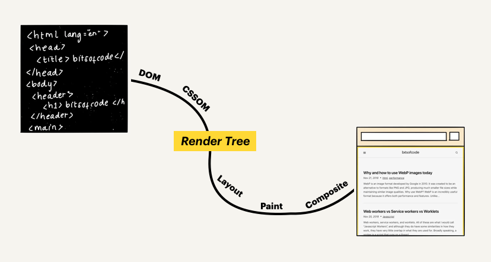

Document Object Model (DOM) HTML
El DOM (Document Object Model) es una interfaz de programación que representa un documento HTML o XML como una estructura de árbol, donde cada elemento del documento se convierte en un nodo del árbol. Esta estructura permite a los programas acceder y manipular el contenido, la estructura y el estilo del documento de manera dinámica.
Es como un puente que conecta el código HTML de una página web con lenguajes de programación como JavaScript. Permite a JavaScript interactuar con los elementos HTML, modificarlos, añadir nuevos elementos y responder a eventos del usuario.
Caracteristicas Principales
- Estructura de árbol: El DOM representa el documento HTML como un árbol jerárquico de nodos, donde cada nodo representa un elemento HTML, un atributo o un texto.
- Acceso y manipulación: El DOM proporciona métodos y propiedades para acceder y manipular los nodos del árbol, lo que permite a los programas cambiar el contenido, la estructura y el estilo del documento.
- Interacción con JavaScript: El DOM es la base para la interacción entre JavaScript y el HTML. JavaScript utiliza el DOM para acceder y manipular los elementos HTML, lo que permite crear páginas web dinámicas e interactivas.

Ejemplo
<p>Este es un párrafo.</p>
<button>Haz clic aquí</button>
El DOM representaría este documento como un árbol con nodos para el elemento p, el elemento button y el texto dentro del párrafo. JavaScript podría utilizar el DOM para acceder al nodo del párrafo y cambiar su contenido, o para añadir un evento al botón que se active cuando el usuario hace clic.